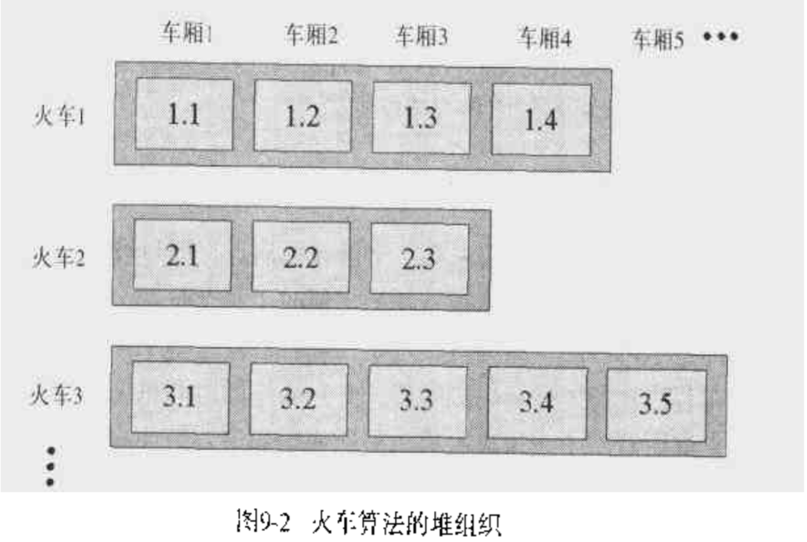

本文是对Java 垃圾收集的汇总和个人理解
垃圾收集算法必须要完成两件事：垃圾对象的检测 和 方法区和堆上的空间回收
垃圾对象的检测有两种方法
- 引用计数：每个对象都有个引用计数器，当引用数为0时成为垃圾，缺点是无法检测循环引用
- 跟踪：从根对象开始遍历可达的对象图，不可达的都是垃圾
垃圾对象空间回收的算法
- 压缩收集：通过把存活对象移动到堆的一端，剩余空间即为回收的空间，这样可以消除碎片
- 拷贝收集：通过把存活对象拷贝到一个新的区域，然后回收旧的区域，好处是垃圾对象的检测和收集同时进行，但需要更大的空间
- 按代收集：把堆分成不同的区域 存放不同年龄的对象，长久存活的对象就不用多次检测，提高高死亡率的对象回收效率
- 自适应收集：JVM根据运行时的情况自适应的选择不同的算法
- 火车算法：
火车算法
为什么？
一般的垃圾收集算法会导致应用程序的停顿，而停顿的时长是不可控的，为此需要使用渐进式的垃圾收集算法；渐进式垃圾收集算法不一次性的完成整个堆的垃圾收集，而只收集一部分空间；只需要控制一次收集的空间的大小即可控制并减少停顿的时间
渐进式垃圾收集算法一般是按代收集，通过控制每一个代(除了成熟对象空间)的大小即可控制最长停顿时长，但最老的那个代(成熟对象空间)的大小是无法给定最大上限的(因为不适合放到其他代的对象都会放到成熟对象空间)，火车算法就是为了能在成熟对象空间中渐进的收集垃圾对象而发明的
是什么？
火车算法把 成熟对象空间 按固定长度的内存块进行划分，每个固定长度的内存块叫“车厢”，多个“车厢”组成的内存块成为一列“火车”，而成熟对象空间里就是一系列“火车”组成的空间
“火车”按创建的顺序进行编号，编号小的火车里的对象都是比较老的对象，同样，一列“火车”里的“车厢”也按照创建的顺序进行编号，新创建的“车厢”会被放到“火车”尾部
对象从年轻的代中晋升到成熟对象区间时，或者把它放到已存在的(非最小号吗的)“火车”的尾部“车厢”，或者新建个“火车”并放进去

怎么样?
火车算法执行时首先检查序号最小的火车内的对象 是否被 成熟对象区以外或其他火车的对象引用，没有则回收这列火车
否则检查序号最小的火车的序号最小的车厢：
- 检查是否有从 对象成熟区 以外的引用 指向 当前车厢内的对象，若有则把 被引用的对象转移到本列火车外的其他车厢，然后检查被转移的对象是否有指向原车厢的对象，有则递归转移到其他火车，若其他火车的车厢满了则新建一个车厢
- 检查是否有从 其他火车 的引用 指向 当前车厢内的对象，若有则把 被引用的对象转移到发起引用的火车的车厢，然后检查被转移的对象是否有指向原车厢的对象，有则递归转移到发起引用的火车，若车厢满了则新建一个车厢
- 检查是否有从 本列火车内的其他车厢 的引用 指向 当前车厢内的对象，若有则把 被引用的对象转移到最后一个车厢，然后检查被转移的对象是否有指向原车厢的对象，有则递归转移到最后一个车厢，若车厢满了则新建一个车厢
- 然后回收当前车厢
通过控制车厢的大小即可控制回收的停顿时间
算法为了让检查和转移对象更高效，使用了一种 记忆集合 的数据结构，每个车厢和火车都有一个记忆集合，记忆集合里存放的是对车厢或火车的外部引用，所以当记忆集合为空时则可回收车厢或火车，当转移对象以后，也可以方便的使用记忆集合的信息更新外部引用；但转移流行对象则会导致需要更新大量外部引用